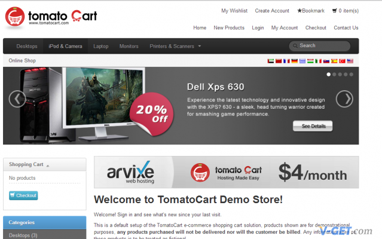
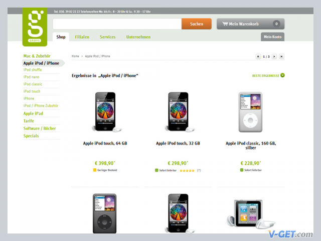
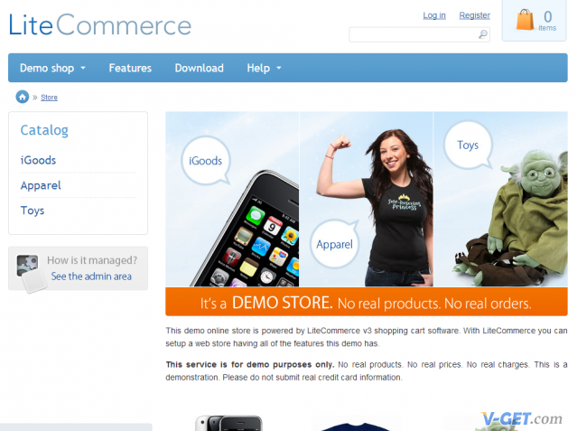

|站长论坛|代理分销|网站开源|手机版
|站长论坛|代理分销|网站开源|手机版Magento （麦进斗） 是一套专业开源的电子商务系统。Magento设计得非常灵活，具有模块化架构体系和丰富的功能。易于与第三方应用系统无缝集成。其面向企业级应用，可处理各方面的需求，以及建设一个多种用途和适用面的电子商务网站。 包括购物、航运、产品评论等等，充分利用开源的特性，提供代码库的开发，非常规范的标准，易于与第三方应用系统无缝集成。
为了打开盈利途径，Magento同时具备收费的企业版本，积极谋求合作和第三方整合的工具，比如电子支付平台等。
Magento建站技术框架受到全球众多500强企业和顶级知名品牌的青睐，已经成为全球主流外贸电子商务和网络购物网站的基础技术框架。
ECMall 社区电子商务系统是继ECShop之后推出的又一个电子商务姊妹产品。
与ECShop纯个人B2C电子商城不同的是，ECMall是一个允许店铺加盟的C2C多店系统。其作用和淘宝网的C2C功能差不多，能够允许其他加盟者管理自己的商品。它不仅可以帮助众多成熟的网络社区实现社区电子商务还可以推进各种地域性、垂直性明显的门户网站的电子商务进程。
ECMall网站管理者可以只负责网站的宣传推广及平台内加盟店铺的管理，并不需要参与实际的商品销售和经营活动。
GetShopped 是一个Wordpress API插件，被用于为Wordpress添加电子商务功能。它是一个非常易于安装的插件，兼容所有标准的Wordpress主题。设计师可以用自己的HTML+CSS代码完全定制属于自己的商城模板。

GetShopped 100%定制Wordpress 电子商务插件（付费）
Zen Cart 是免费的国产PHP开源商城- 用于建立自己的网上商店，为网上销售商而设计。Zen Cart是一个免费、界面友好、开放式源码的网购商城系统。Zen Cart 由一些销售商、程序员、设计师和顾问们共同开发，目的就是用户能建立风格不同的电子商务系统。现有的一些解决方案过重于编程，而不是着眼于客户的需求。
ECShop是一款B2C独立网店系统，适合企业及个人快速构建个性化网上商店。系统是基于PHP语言及MYSQL数据库构架开发的跨平台开源程序。
ECShop除了注重功能上的强大以外，还有一个重要的特点就是操作上的方便快捷。ECShop管理员后台简单易用，只需轻点鼠标+简单录入即可完成商城管理。ECShop后端功能虽然越来越强大，但是操作却越来越简单，可视化编辑，所见即所得，成为国内多数从事电商的个人和企业首选。
OpenCart是国外著名的开源电子商务网站，由英国人Daniel一人独立开发，其社区非常活跃，由各国网友翻译出来的语言包已经达到18种，其中包括中文，俄文，法文，西班牙文，德文，日文等等。
OpenCart的优势在于前台界面的设计非常适合欧美购物者的浏览习惯：简洁，直观，唯美！
后台也非常的简洁明了，而且功能强大，对于初学者来说非常容易上手，对于大多数经验丰富的网店经营者来说，OpenCart的后台管理功能也基本能满足其需求。OpenCart可以说是最适合国内用户建设外贸网店的程序！
osCommerce是一个利用互联网建立网上商店的应用程序，所以我们可以称它是"开源网上开店程序"。
osCommerce 是一套由自由软件开发社团开发并维护的在线商店的解决方案。由于遵循开源软件开发和发布协议，osCommerce可以自由下载、安装和使用，并可以根据自己的需要进行修改和发布，可以应用到任何的商业环境中，但是不能够利用本身进行营利性质的活动修改。
osCommerce 系统拥有简单的安装、灵活的设置和强大的后台维护功能，可以让 不懂技术的使用者根据 参考的文档和说明非常容易的在自己的系统平台上，比如自己的Windows电脑上面安装和运行自己的电子商务网站。如果遇到问题，可以到官方的支持社区寻 求帮助，在那里，我们可以找到许多资源，可以到技术支持论坛上搜索和提出你的问题，可以在插件栏目下搜索你需要的外挂插件，可以到FAQ上寻求一般的问题 解答，这一切都使得osCommerce具有旺盛的生命力。
TomatoCart是一个开源电子商务应用程序，源自osCommerce但拥有更好的用户体验。它提供一个全新的前台和后台界面，后台采用ExtJS开发。该程序支持销售任意类的商品从简单的产品到数字货物和服务。

TomatoCart 源自osCommerce的PHP商城
TomatoCart还提供一些市场营销功能如：礼券，按购买数量打折，交叉销售，愿望清单等。TomatoCart支持生成SEO友好的URL，自动生成sitemap.xml，提供网站访问统计，内置webmail客户端可以在后台收发email。
Avactis是一个功能强大的收费PHP电子商城系统。它具备一个在线购物系统所需要的所有功能从产品到会员管理，订单和营销。可以无限分类和为产品指定任务数量的图片（支持自动生成缩略图）。使用自定义字段功能，让你可以更好地定义一个产品。该系统提供以非常灵活的方式来创建任意类型的促销活动如设置折扣代码，基于价格的折扣或基于数量的折扣等。
PHP-MultiShop是一个基于PHP-Nuke与osCommerce的电子商务购物系统，目的是通过整合上述两个开源系统构建一个功能强大的网上商城。系统将含有PHP-Nuke的模块称为"protal-side"，将含有osCommerce的模块称为"store-side"。用户通过访问此系统建立的站点，既可以实现在线购物，又可以浏览与商品相关的新闻、信息、论坛等。
PHP- MultiShop它可被用作具有任何类型内容(如新闻，论坛，事件等)的门户网站和一 个或多个独立的网店。每个商店将有它们自已的域名，并且具有一个典型电子商务所应拥有的全部功能与个性。每个商店完全可以自主管理好像是独立于该电子商场。
PrestaShop是一款针对web2.0设计的全功能、跨平台的免费开源电子商务解决方案，自08年1.0版本发布，短短两年时间，发展迅速，全球已超过四万家网店采用PrestaShop进行部署。PrestaShop基于Smarty引擎编程设计，模块化设计，扩展性强，能轻易实现多种语言，多种货币浏览交易，支持Paypal等几乎所有的支付手段，是外贸网站建站的佳选。PrestaShop是目前为止，操作最简单，最人性化，用户体验最佳的电子商务解决方案之一。
PrestaShop是一个功能丰富，基于PHP5开发的Web2.0网上购物系统。PrestaShop具有可定制，稳定等特点。整个系统只有5.8MB，易于快速安装。
phpShop是一个基于PHP的网上商店系统。phpShop虽然比其它网上购物系统简单，而且功能少。但是它非常灵活可让你按自己的个性化要求进行定制。
PHPShop 购物系统是国内购物开发团队拥有产权(计算机软件著作权登记号：2009SR06466)自主开发完全按照 WEB2.0 标准架构的一套完整、专业的购物系统，主要面向企业和大中型网商提供最佳保障，最大化满足客户目前 及今后的独立网店应用需求。支持目前2种流行的网上在线支付手段,128Bit加密安全保障,可以放心使用。
支付宝网上支付支持 PHPShop 购物系统对支付宝在线支付进行了整合，填入您的支付宝账号就可以轻松实现在线支付。财富通网上支付支持 财富通在线支付 PHPShop也进行了整合，同样填入您的账号就可以轻松实现在线支付功能。
OXID eSales 是一个灵活，适应性强的网店系统，B2B和B2C一体的界面很友好的PHP电子商城系统，而目前大多数成熟的电子商城系统都是B2B或者B2C的单功能的，能够像OXID eSales 这样对B2B和B2C结合的很完美、同时又兼具网上商城和移动销售点商城的系统是非常少的。OXID eSales 界面不错，看着就简洁。

OXID eSales 德国B2C和B2B双系统网店、移动端开源PHP网店系统
jCart是一个Ajax购物车，易于安装和定制。基于PHP+Jquery+Ajax开发，jCart处理访问者输入不刷新页面的情况下执行购物操作。能够很方便与现有Wordpress系统相集成使用，并支持服务器端输入校验。
不过作为一个Ajax系统的购物商城，对于很多不支持Javascript的浏览器可能会导致无法使用。所以jCart一般被用作很多自己开发PHP电子商城系统的程序员作为参考使用，如果被用作商业仍然需要值得考虑。
LiteCommerce是一个开源PHP电子商务系统，可以集成到Drupal CMS系统中使用。可以创建无限级产品分类，一个产品可以属于多个分类。LiteCommerce提供库存跟踪功能，可以设置批发价格、折扣或礼券。支持Paypal、Google++ Checkout和Authorize.NET 等多种付款方式。
LiteCommerce支持Memcached，采用速度优化的PHP架构。

LiteCommerce 集成到Drupal CMS的PHP开源商城
ZenMagick 是一套源于Zen Cart的简洁开源PHP电子商城系统。ZenMagick是一个灵活、简洁、可靠的电子商城架构，在一些方面提升了Zen Cart的一些功能。ZenMagick支持无限产品分类、多国语言、多国货币、干净整洁的管理系统、自定义产品类型、内置的Ajax免刷新购物体验、通过插件的灵活的可扩展性、免费送货和计费模块、简单的基于PHP的模板、免费和商业支持的PHP开源电子商城系统。